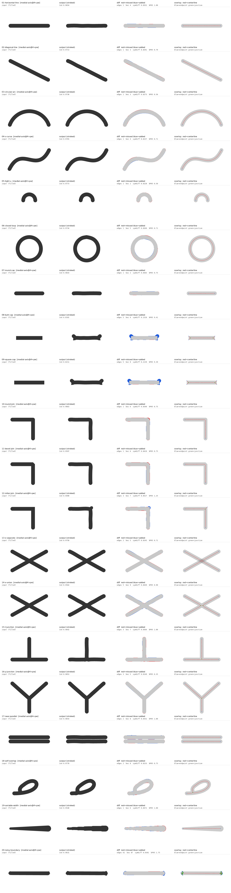

| image | tag | iou | pixelDiffPct | symDiffFrac | boundaryMedian | boundaryP95 | centerlineMedian | centerlineP95 | edges | nodes | bezierSegments | controlPoints | fileBytes | extractSeconds |
|---|---|---|---|---|---|---|---|---|---|---|---|---|---|---|
| 01-horizontal-line | medial-axis@4+pw | 0.9654 | - | 0.0352 | 0.2500 | 1.0000 | 0.0922 | 0.1500 | 1 | 2 | 4 | 13 | 427 | 3.3983 |
| 02-diagonal-line | medial-axis@4+pw | 0.9713 | - | 0.0291 | 0.2500 | 0.7906 | 0.1394 | 0.1878 | 1 | 2 | 3 | 10 | 389 | 0.1828 |
| 03-circular-arc | medial-axis@4+pw | 0.9730 | - | 0.0273 | 0.2500 | 0.5590 | 0.0746 | 0.1293 | 1 | 2 | 3 | 10 | 391 | 0.1914 |
| 04-s-curve | medial-axis@4+pw | 0.9765 | - | 0.0237 | 0.2500 | 0.7071 | 0.1173 | 0.1765 | 1 | 2 | 4 | 13 | 427 | 0.2003 |
| 05-tight-u | medial-axis@4+pw | 0.9773 | - | 0.0228 | 0.2500 | 0.5000 | 0.0942 | 0.1598 | 1 | 2 | 2 | 7 | 349 | 0.1418 |
| 06-closed-loop | medial-axis@4+pw | 0.9734 | - | 0.0269 | 0.2500 | 0.7071 | 0.1292 | 0.1540 | 1 | 1 | 5 | 16 | 467 | 0.2100 |
| 07-round-cap | medial-axis@4+pw | 0.9643 | - | 0.0363 | 0.2500 | 0.7500 | 0.1013 | 0.1484 | 1 | 2 | 2 | 7 | 348 | 0.1391 |
| 08-butt-cap | medial-axis@4+pw | 0.8101 | - | 0.2310 | 0.5000 | 9.4141 | 0.2331 | 7.1575 | 5 | 6 | 9 | 32 | 908 | 0.1553 |
| 09-square-cap | medial-axis@4+pw | 0.8211 | - | 0.2139 | 0.7500 | 9.3941 | 0.0938 | 9.7011 | 5 | 6 | 8 | 29 | 869 | 0.1452 |
| 10-round-join | medial-axis@4+pw | 0.9663 | - | 0.0340 | 0.2500 | 0.7500 | 0.1608 | 0.4518 | 1 | 2 | 6 | 19 | 492 | 0.1629 |
| 11-bevel-join | medial-axis@4+pw | 0.9597 | - | 0.0410 | 0.2500 | 0.7500 | 0.1175 | 0.3953 | 1 | 2 | 6 | 19 | 499 | 0.1595 |
| 12-miter-join | medial-axis@4+pw | 0.9490 | - | 0.0527 | 0.2500 | 1.2500 | 0.1309 | 1.1484 | 3 | 4 | 7 | 24 | 671 | 0.1873 |
| 13-x-separate | medial-axis@4+pw | 0.9758 | - | 0.0245 | 0.0000 | 0.7071 | 0.1444 | 0.2384 | 2 | 4 | 5 | 17 | 509 | 0.2881 |
| 14-x-union | medial-axis@4+pw | 0.9564 | - | 0.0449 | 0.3536 | 0.9014 | 0.2139 | 1.9381 | 5 | 6 | 9 | 32 | 913 | 0.1973 |
| 15-t-junction | medial-axis@4+pw | 0.9642 | - | 0.0364 | 0.2500 | 1.0000 | 0.1455 | 0.3953 | 3 | 4 | 7 | 24 | 735 | 0.1787 |
| 16-y-junction | medial-axis@4+pw | 0.9853 | - | 0.0149 | 0.0000 | 0.3536 | 0.1365 | 0.1767 | 3 | 4 | 5 | 18 | 563 | 0.1938 |
| 17-near-parallel | medial-axis@4+pw | 0.9654 | - | 0.0352 | 0.2500 | 1.0000 | 0.0922 | 0.1500 | 2 | 4 | 8 | 26 | 627 | 0.2070 |
| 18-self-overlap | medial-axis@4+pw | 0.9770 | - | 0.0233 | 0.2500 | 0.7500 | 0.2395 | 1.0773 | 2 | 2 | 8 | 26 | 733 | 0.1649 |
| 19-variable-width | medial-axis@4+pw | 0.9540 | - | 0.0472 | 0.5000 | 1.0000 | 0.1317 | 0.1741 | 1 | 2 | 6 | 19 | 737 | 0.1473 |
| 20-noisy-boundary | medial-axis@4+pw | 0.9631 | - | 0.0381 | 0.2500 | 1.7500 | 0.7835 | 9.4135 | 61 | 68 | 87 | 322 | 7235 | 0.1756 |
